Figure 1: Overview of all businesses in Engagement showing key metrics.
Michal Sterzel, University of Luxembourg & UPC Universitat Politècnica de Catalunya, michal.sterzel.001@student.uni.lu
Thomas Gantz, University of Luxembourg & Sorbonne Université, thomas.gantz.001@student.uni.lu
Jan Marxen, University of Luxembourg & Sorbonne Université, jan.esquivel.001@student.uni.lu
Student Team: YES
Backend: Python 3.11, Flask, Pandas, NumPy, Scikit-learn (K-Means clustering), Pytest
Frontend: React 18, D3.js v7, Axios, TailwindCSS
Infrastructure: Docker, Docker Compose, Nginx
Approximately how many hours were spent working on this submission in total?
Approximately 45 hours (≈15 hours per team member)
Video
Use visual analytics to analyze the available data and develop responses to the questions to be provided. In addition, prepare a video that shows how you used visual analytics to solve this challenge.
Questions
1 - Over the period covered by the dataset, which businesses appear to be more prosperous? Which appear to be struggling? Describe your rationale for your answers. Limit your response to 10 images and 500 words.
Answer:
We analyzed business prosperity in Engagement using multiple complementary views: an overview of all businesses, temporal revenue trends, weekend vs. weekday patterns, financial health indicators, visit frequencies, market share distribution, performance metrics, and customer demographics.
Business Overview. The overview visualization (Figure 1) provides a comprehensive snapshot of all businesses in Engagement, displaying key metrics such as total revenue, customer counts, and business category. This bird's-eye view allows immediate identification of the largest and smallest players in the local economy, setting the stage for deeper analysis.
Figure 1: Overview of all businesses in Engagement showing key metrics.
Revenue Trends and Weekend Patterns. The trend analysis (Figure 2) tracks revenue over time, revealing which businesses maintain steady income streams versus those experiencing volatility or decline. The weekend comparison (Figure 3) highlights businesses that depend heavily on weekend traffic versus those with consistent weekday revenue—an important distinction for understanding business models and vulnerability to scheduling changes.


Figure 2 (left): Revenue trends over time. Figure 3 (right): Weekend vs. weekday revenue patterns.
Financial Health and Visit Frequency. The financial health visualization (Figure 4) combines multiple indicators to assess business stability, while the visits analysis (Figure 5) shows customer traffic patterns. Businesses with high visit frequency but low revenue per visit may be struggling with pricing, whereas those with declining visits face customer retention challenges.
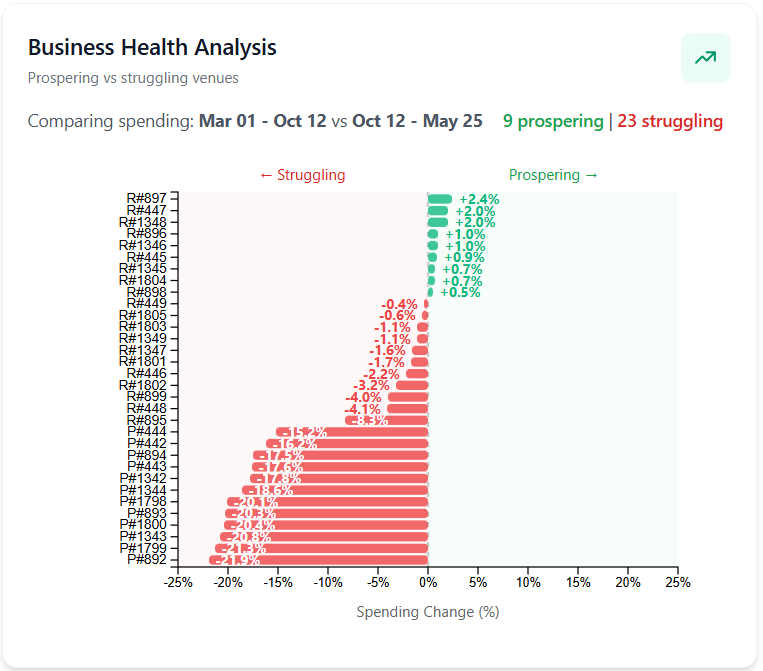

Figure 4 (left): Financial health indicators. Figure 5 (right): Visit frequency analysis.
Market Share and Performance. The market share distribution (Figure 6) reveals competitive dynamics within Engagement's economy—a few businesses dominate their categories while others struggle for visibility. The performance visualization (Figure 7) ranks businesses by key success metrics, clearly identifying top performers and those falling behind.
 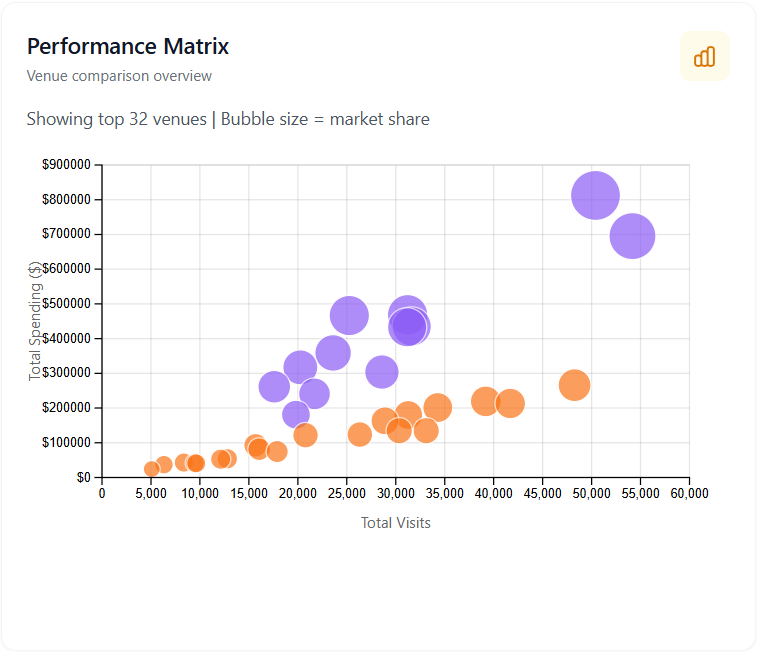
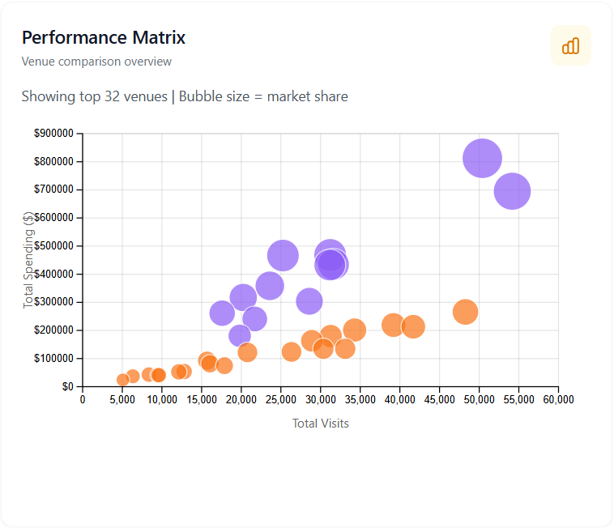
Figure 6 (left): Market share distribution by category. Figure 7 (right): Business performance ranking.
Customer Demographics. Understanding who patronizes each business provides insight into prosperity drivers. The customer analysis views (Figures 8–9) segment patrons by demographic characteristics, revealing whether businesses serve diverse or narrow customer bases—a key indicator of resilience and growth potential.
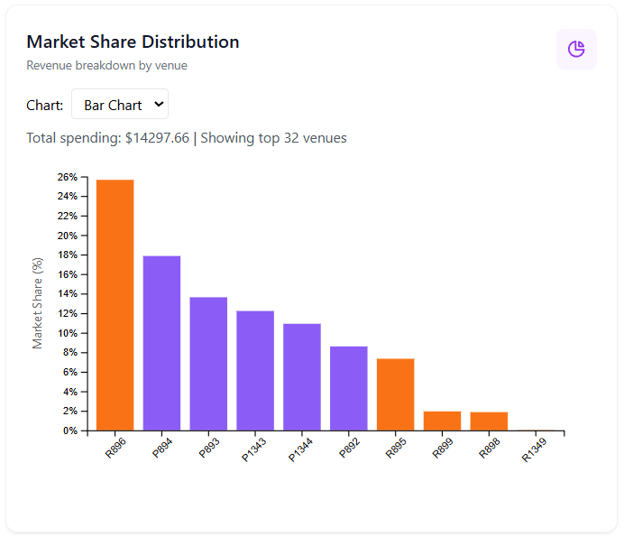

Figure 8 (left): Customer demographic breakdown. Figure 9 (right): Customer spending patterns by segment.
Why this design works. These coordinated views enable multi-faceted business assessment: the overview provides context, temporal views reveal trends and seasonality, health and visit metrics quantify performance, market share shows competitive position, and customer demographics explain underlying demand. Together, they answer both "which businesses are thriving or struggling" and "why."
Conclusion. Prosperous businesses in Engagement exhibit stable or growing revenue trends, diversified customer bases, strong market share positions, and healthy visit-to-revenue ratios. Struggling businesses show declining trends, weekend-dependent revenue, narrow customer demographics, or poor conversion of visits to revenue. The visualizations make these distinctions immediately apparent and support targeted intervention recommendations.
2 - How does the financial health of the residents change over the period covered by the dataset? How do wages compare to the overall cost of living in Engagement? Are there groups that appear to exhibit similar patterns? Describe your rationale for your answers. Limit your response to 10 images and 500 words.
Answer:
We looked at resident financial health from three angles: where financial stress concentrates in the city, which household groups are closer to (or past) break-even, and how income/expenses/inequality evolve over time.
Geographic Financial Health. The building-level heatmap shows scattered “red pockets” of low savings across Engagement (Figures 1 & 2). Early vs. later snapshots suggest these pockets are persistent rather than spreading, pointing to chronic neighborhood-level strain rather than a city-wide decline.


Figure 1 (left): Geographic financial health at the start of the period. Figure 2 (right): Geographic financial health later in the dataset.
Wages vs. Cost of Living. The Living Gap scatter plot (Figure 3) puts wages against total living costs and makes the break-even line an immediate reference point. Most residents sit on the surplus side, but the dense band near break-even suggests many households have only a thin “buffer” month to month (Figure 3). When filtering by household type, the “with children” group shifts right (Figures 4 & 5), indicating higher living costs; the main takeaway is the higher cost burden rather than a fundamentally different income distribution.

Figure 3: All residents.
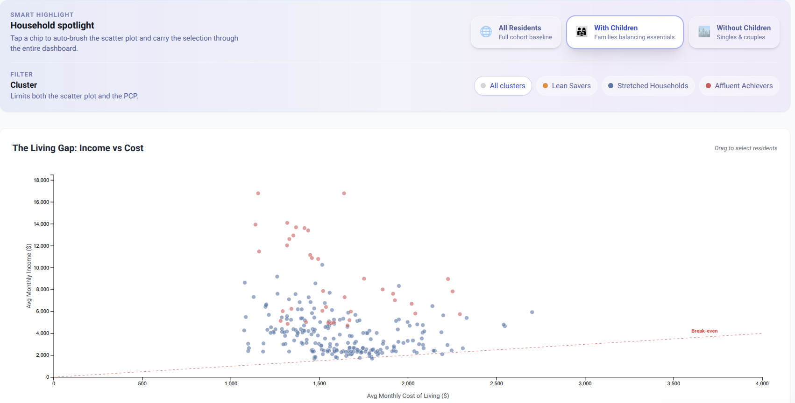
Figure 4: Families with children.
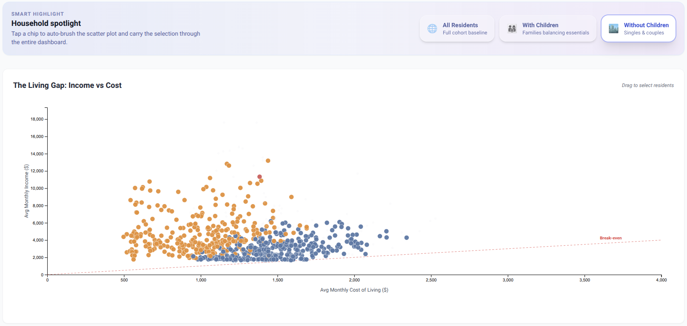
Figure 5: Households without children.
Cluster Patterns. Using k-means, we get three recurring “financial personas”: Affluent Achievers (very high incomes and high savings), Stretched Households (lower incomes with tighter budgets and lower savings capacity), and Lean Savers (modest-to-moderate incomes with a different cost/income balance than Stretched). These personas overlap; labels summarize dominant tendencies rather than strict rules. In April 2022 (the month shown in Figures 3–7), the medians (Income / Cost / Savings Rate) were: Affluent $5,756 / $1,419 / 76.6%, Stretched $2,869 / $1,405 / 51.0%, and Lean $3,352 / $1,586 / 54.5%. The clearest separation signals in demographics are having kids (η² 83.1%), graduate education (η² 72.0%), household size (η² 61.9%), and income (η² 38.0%). Figures 6–7 illustrate that our visualizations can be filtered by cluster: we show the Affluent Achievers profile in the parallel coordinates plot (Figure 6) and their Living Gap scatter distribution (Figure 7).


Figure 6 (left): Parallel coordinates profile for the Affluent Achievers cluster. Figure 7 (right): Living Gap scatter filtered to the same cluster.
Expense Trajectories & Inequality. The stacked area chart (Figure 8) tracks average monthly income (dashed line) against the composition of expenses and highlights a visible drop in both income and expenses in the final months (April–May 2023), consistent with a slowdown. The inequality timeline (Figure 10) shows relatively stable income inequality but more volatile savings inequality.
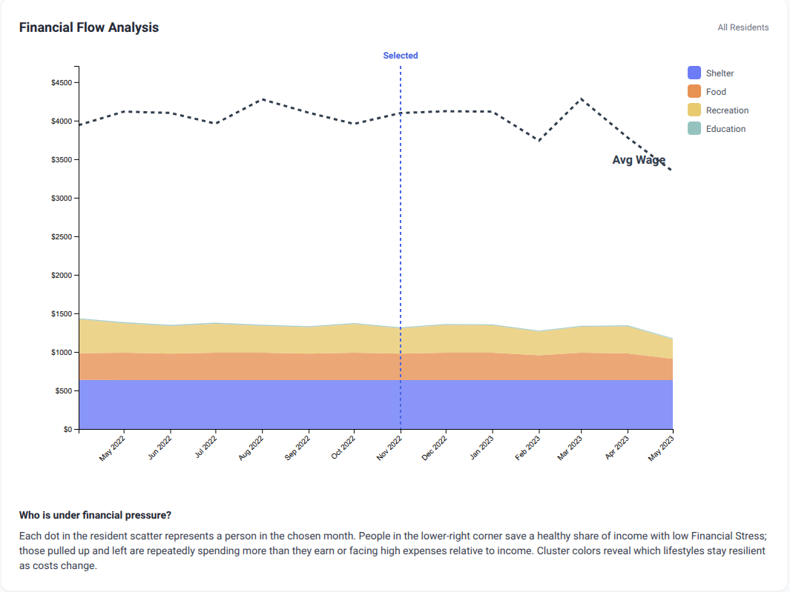

Figure 8 (left): Income vs. stacked expenses over time. Figure 9 (right): City-wide expense breakdown.

Figure 10: Gini coefficient for income (blue) and savings rate (red) over time. The formula G = (2 * sum(i * yi)) / (n * sum(yi)) - (n+1)/n measures inequality from 0 (equal) to 1 (unequal).
Conclusion. Financial health in Engagement is stable on aggregate but uneven: the strongest, most consistent strain signal comes from household structure, especially families with children sitting near break-even (Figures 4–5). Cost pressures matter most: cost of living is the strongest predictor of savings rate (ΔR² 0.828), followed by income (0.408), household size (0.376), and having kids (0.127). Persistent geographic hotspots (Figures 1–2) suggest targeted neighborhood interventions could have outsized impact.
Notes on metrics. R² measures how much variance in savings rate a model explains: R² = 1 − SSE/SST. The reported ΔR² values indicate each predictor’s additional (incremental) contribution when added to the multivariate model. η² is an effect-size for group separation: η² = SSB/SST, i.e., the share of variance in a variable explained by cluster membership.
3 - Describe the health of the various employers within the city limits. What employment patterns do you observe? Do you notice any areas of particularly high or low turnover? Limit your response to 10 images and 500 words.
Answer:
We assessed employer health within the city of Engagement by analyzing workforce stability, turnover intensity, job-to-job mobility, and short-term changes in employee counts. Our analysis is constrained by the dataset: observed job transitions occur primarily during March–April 2022, with no additional job changes recorded afterward. Rather than indicating ongoing stability, this reflects the limits of the available data and is explicitly shown in the interface.
Workforce Instability and Turnover Concentration
The Employer Turnover Ranking reveals strong heterogeneity in workforce change intensity across employers. The visualization focuses on the upper tail of the distribution, highlighting employers with extreme workforce churn during the observed period. Several employers exhibit turnover rates far exceeding 100%, driven by repeated employee exits relative to small average headcounts.
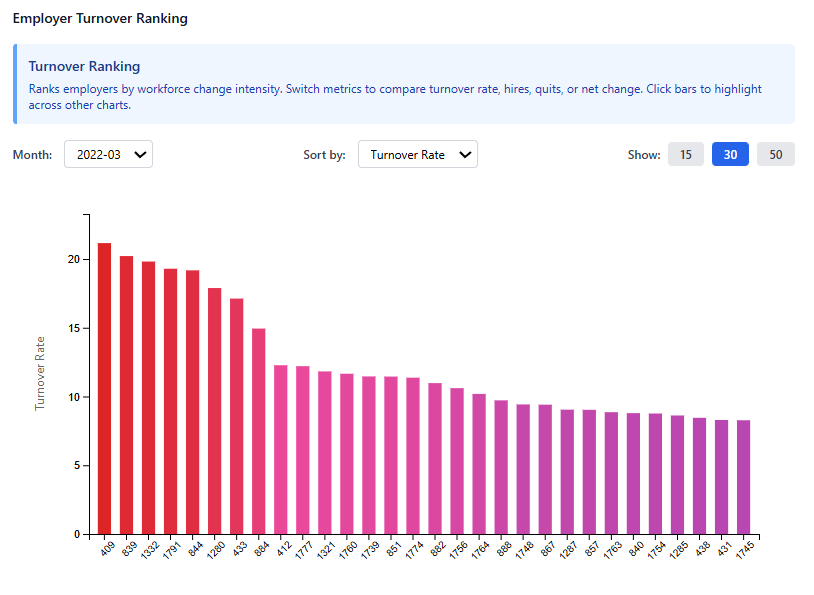
Figure 1: Employer Turnover Ranking highlighting extreme turnover values.
These extreme values do not indicate growth, but rather intense instability: employers ranking highest by turnover also show high quit counts and strongly negative net workforce change. This pattern suggests persistent outward movement of workers rather than balanced hiring and retention. In contrast, many employers experience little to no workforce change and therefore do not appear in the ranking, indicating comparatively stable employment structures.
Stability, Tenure, and Employer Risk Profiles
The Employer Stability Overview combines turnover, average tenure, and workforce size into a single view. Employers cluster into two dominant regimes:
High-risk employers with high turnover and low average tenure, indicating short job durations and frequent exits.
Stable employers with low turnover and long tenure, reflecting sustained employment relationships.
Employer size alone does not determine stability: both small and large employers appear in each regime. However, high-risk employers with larger workforces amplify their impact on city-wide employment volatility.
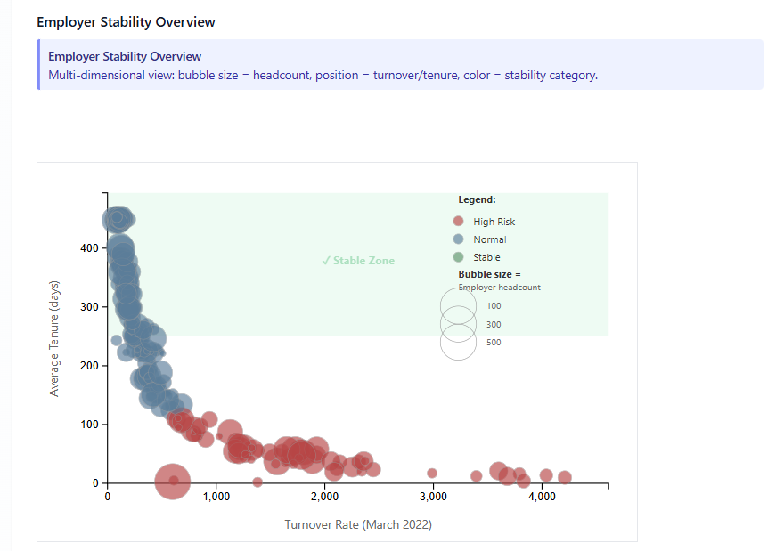
Figure 2: Employer Stability Overview showing the clustering of employers into stability regimes.
Worker Mobility Between Employers
The Job Flow Sankey diagram illustrates directional worker movement between employers. A small number of employers act as major sources of outgoing labor, while others consistently receive workers. This asymmetry shows that workforce instability propagates through the employer network, rather than remaining isolated within individual organizations.
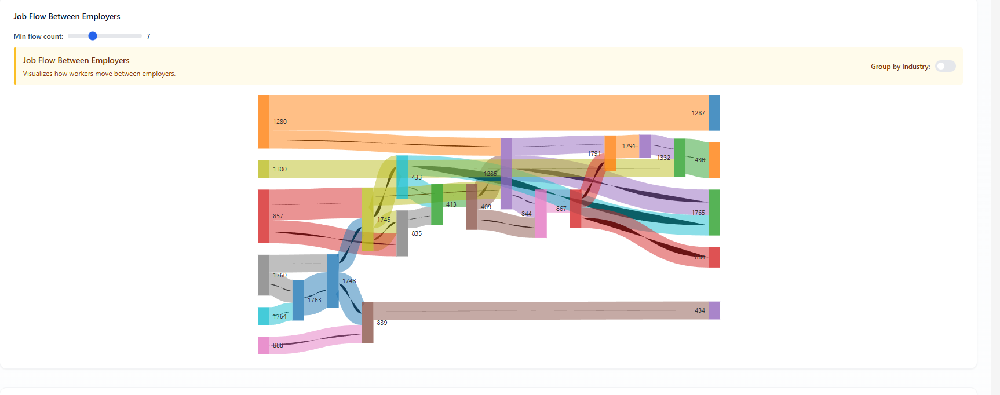
Figure 3: Job Flow Sankey diagram illustrating directional worker movement between employers.
Short-Term Workforce Fluctuations
The Employee Count Trends visualization shows that workforce changes occur in short, concentrated bursts during the limited period with recorded transitions. Employers experiencing high turnover also exhibit abrupt rises and drops in employee counts, reinforcing the link between turnover intensity and workforce volatility.
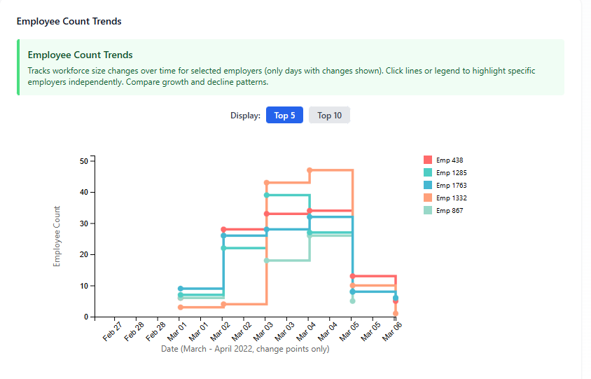
Figure 4: Employee Count Trends showing workforce fluctuations during periods of high turnover.
Conclusions
Overall, employer health in Engagement is highly uneven. A minority of employers exhibit acute workforce instability, characterized by high turnover, low tenure, and strong outward job flows. Most employers, however, show limited workforce movement and relatively stable employment relationships during the observed period. The concentration of instability among specific employers suggests localized labor market stress rather than city-wide systemic disruption.